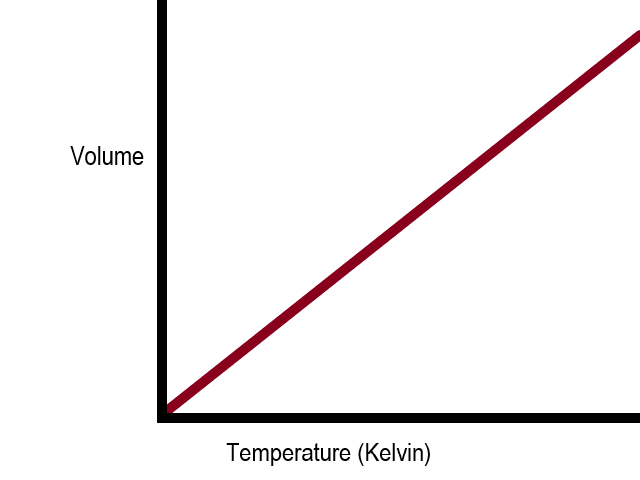
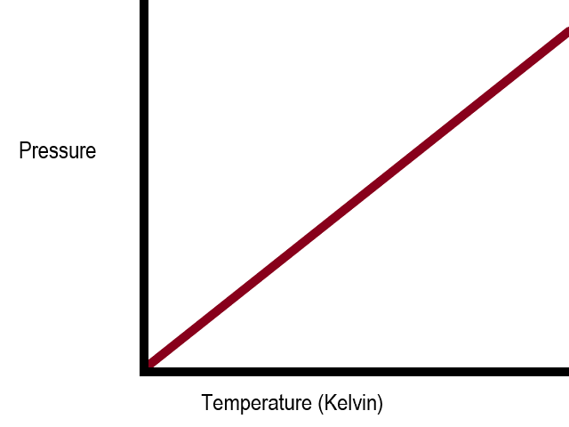
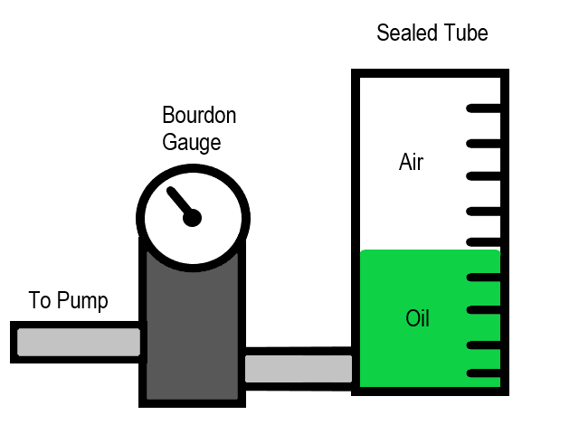
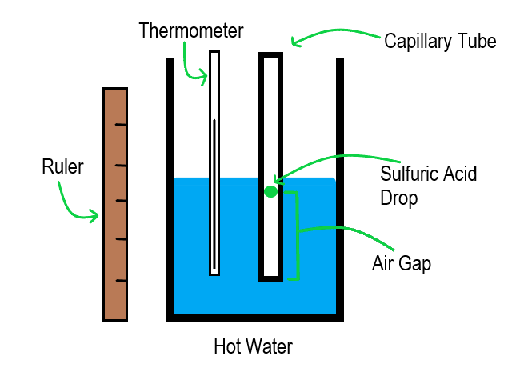

Thermal Physics
Gas Laws
The Kelvin Scale and Absolute Zero
- There is a minimum possible temperature, where a particle theoretically has zero kinetic energy. This is called absolute zero.
- The Kelvin scale is an absolute scale. Zero Kelvin is equal to absolute zero. A unit increase of one Kelvin is equal in magnitude to a unit increase of one degree Celsius. Zero degrees Celsius is equal to 273 Kelvin.
- Using the Kelvin scale, temperature is directly proportional to the energy of the particle.
Gas Laws
- There are three main gas laws. They are each only true for a fixed mass of gas.
- Boyle's Law states that pressure is inversely proportional to volume, under isothermic conditions. In symbols it is written as: p = k / V.
- Boyle's Law is true because, if a fixed mass of gas is compressed to a smaller volume, its particles will collide much more often with the surface of the container, thus increasing the pressure on the container walls.
- For a constant temperature, a pressure (y-axis) against volume (x-axis) graph will product a k / x graph. The larger the temperature, the larger k will be and the higher up the curve will be. In the diagram below, T1 shows the lowest temperature and T3 shows the highest temperature of the three.

- Charles' Law states that volume is directly proportional to absolute temperature, under isobaric conditions. In symbols it is written as: T = kV.
- Charles' Law is true because particles with a higher temperature will have more kinetic energy. Therefore, they will move about more and spread out more, hence volume will increase on average.
- For a constant pressure, a volume (y-axis) against temperature (x-axis) graph will be a straight line graph. If temperature is measured in Kelvin, the graph will pass through the origin. If temperature is measured in degrees Celsius, the line will pass through the x-axis at x = -273 degrees Celsius.

- The Pressure Law states that pressure is directly proportional to absolute temperature when volume is constant. In symbols, this is written as: p = kT.
- The Pressure Law is true because particles with a greater temperature have more kinetic energy, and thus collide with the surface more frequently and with greater energy, thus increasing pressure.
- For a constant volume, a graph of pressure (y-axis) against temperature (x-axis) will be a straight line. If temperature is measured in Kelvin, the line will pass through the origin. If temperature is measured in degrees Celsius, the line will pass through the x-axis at x = -273 degrees Celsius.

An Experimental Approach to the Gas Laws
- Boyle's Law can be investigated experimentally. The first step involves setting up equipment. Set up a sealed tube with a volume scale (e.g. a sealed measuring cylinder) and a fixed volume of oil inside. Connect this to a Bourdon Gauge (for measuring pressure), and a pump.

- The second step in the Boyle's Law experiment involves recording the initial volume and pressure (i.e. atmospheric pressure).
- The third step in the Boyle's Law experiment involves increasing the pressure using the pump. Every time pressure is increased, record the volume of the air in the cylinder. The exerted pressure should cause the oil to move up the cylinder. After each pump, the oil will move upwards until the pressure exerted on the oil by the air is equal to the pressure of exerted on the air by the oil. This means that the reading of the Bourdon Gauge will give you the pressure on the air as well as on the oil. Record the new pressure and volume of the air each time.
- The fourth step in the Boyle's Law experiment involves plotting a graph of pressure against 1 / volume. The result should be a straight line that passes through the origin.
- Charles' Law can also be investigated experimentally. The first step involves setting up equipment. Set up a capillary tube with a drop of sulfuric acid inside it, and place it next to a thermometer in some near-boiling water, inside a beaker. Make sure that their is an air gap below the sulfuric acid.
- The second step in the Charles' Law experiment involves waiting for the temperature of the water to cool about 5 degrees Celsius and recording the new temperature and the length of the air bubble beneath the sulfuric acid drop. Repeat this until the water reaches room temperature.

- The third step in the Charles' Law experiment involves repeating steps 1 and 2 at least three times and taking an average air bubble height for each temperature.
- The fourth step in the Charles' Law experiment involves converting temperatures to Kelvin and plotting a graph of air-gap length against absolute temperature. The line should be straight and pass through (or close to) the origin, as length is directly proportional to volume and volume is directly proportional to temperature, so length is directly proportional to temperature.